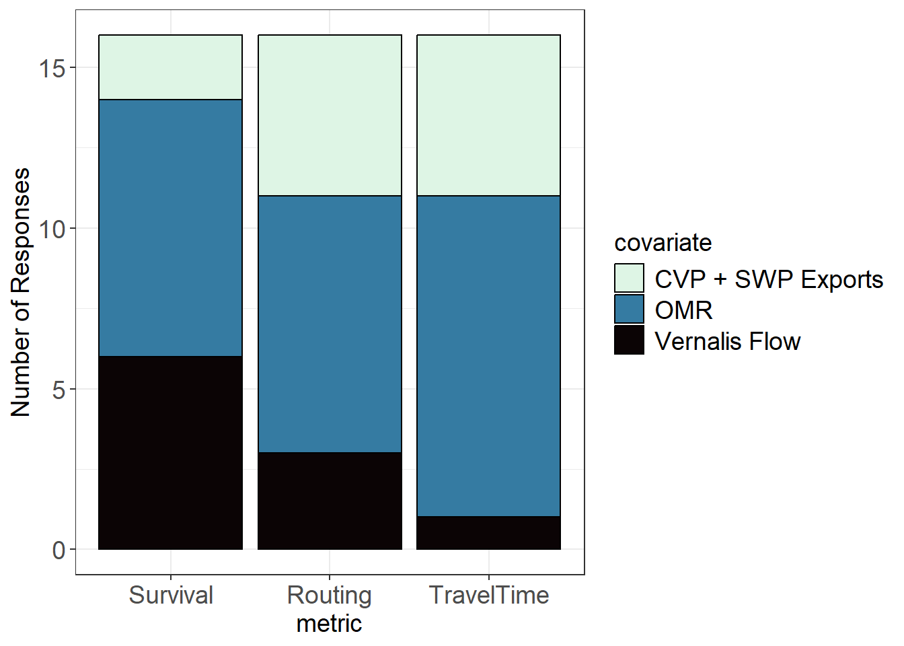

Steelhead-Elicitation
Steelhead Elicitation Results Round 1
These are the results of Steelhead STARS Elicitation 1.
Region Designations

Region 1 (Upper San Joaquin River) Covariates
Covariate Selection
| metric | covariate | prop | med_conf |
|---|---|---|---|
| Survival | CVP + SWP Exports | 0.00 | NA |
| Survival | OMR | 0.00 | NA |
| Survival | Vernalis Flow | 1.00 | 3 |
| Routing | CVP + SWP Exports | 0.00 | NA |
| Routing | OMR | 0.06 | 2 |
| Routing | Vernalis Flow | 0.94 | 3 |
| TravelTime | CVP + SWP Exports | 0.00 | NA |
| TravelTime | OMR | 0.00 | NA |
| TravelTime | Vernalis Flow | 1.00 | 3 |
Summary
Near-unanimous consensus among experts that Vernalis flow is the primary driver for all three metric (survival, routing, and travel time)
Survival
General agreement that higher Vernalis flow is directly correlated with higher survival rates. This was attributed to a combination of factors including improved water quality (e.g., lower temperatures), reduced predation risk due to faster transit, and the minimal hydrodynamic influence of south Delta exports in this region.
Rationales
Vernalis Flow
Reclamation LTO FEIS Appendix I Old and Middle River Flow Management Attachment I.3 Delta Export Zone of Influence Analysis
Observations and analysis from the 6-year steelhead study showing more fish taking the SJ route and subsequently surviving when flows are higher (see reports for 2021, 2022, and 2024; Matthias, B. G., L. Yamane, and T. Senegal. 2025. Estimation of juvenile Steelhead survival and routing migrating through the Delta: 2024 Six-Year Steelhead Survival Study Statistical Methods and Results. Submitted to U. S. Bureau of Reclamation for Interagency Agreement R21PG00013.)
Based on Fig 4 Panels A-C of Pope et al 2025
SJR flow strongly influences hydrodynamic conditions experienced by juvenile steelhead in most of this region. In contrast, export effects on hydrodynamics are very weak in this region. OMR flows integrate exports and Vernalis flows. Since export effects are weak in this region while SJR flow effects are strong, there is no advantage to using OMR flows over SJR flows (Vernalis Flow). Lastly, this finding has been affirmed by prior analyses.
Exports may play less of a role in entraining juvenile Chinook Salmon when outflow from the San Joaquin River is high
Based on the original 6-year study and South Delta steelhead survival studies by Matthias et al. Looking at 2011, we saw the highest survival and lower survival during critical and dry water years (2012-2016). Vernalis flows are also correlated with water temperatures (higher flows are often associated with lower temperatures and, again, higher survival). Vernalis flows are also associated with lower travel time, so smolts are able to move faster through this reach, thus reducing exposure to predators.
Buchanan et al. 2022 found that survival of steelhead in this reach was most strongly associated with flow with exports having a far weaker effect. This is a region where flow can change from bi-directional to unidirectional as inflows increase. On the Sacramento river, Chinook survival in these “transitional” reaches also responded strongly to inflow (Perry et al. 2018). There is not a lot of opportunity for exports to affect hydrodynamics in this reach except when flows are very low and exports are high (Cavallo et al. 2015). Buchanan (2024) found that localized flow metrics had a greater affect on routing in this reach compared to larger scale metrics.
2024 CAMT Salmon Technical Working Group Final Report “a Review of Recent Science to Improve Our Understanding and Application of Life Cycle and Decision Support Models to Salmon Management in the South Delta”; Buchanan steelhead routing presentation June 2025; Buchanan et al. 2021; Pope et al. 2025; Buchanan and Whitlock 2022
Multiple models of steelhead and Chinook salmon survival in this system and other systems indicate the primacy of river discharge in driving changes in survival in a riverine reach such as Region 1, including Perry et al. (2018), Buchanan et al. (2021), and Pope et al. (2025). Buchanan and Whitlock (2022) found that temperature was better supported than Delta inflow for fall-run Chinook salmon in this region; the correlation between temperature and flow makes it difficult to separate effects, but also suggests that Vernalis flow is more relevant than either exports or OMR. Increased flow is expected to improve water quality (including temperature) while also providing increased volume of accessible habitat, improved travel time, and improved rearing opportunities, all of which support the role of flow in survival in this region. Additionally, hydrodynamics in this region are only minimally effected by exports and OMR, if at all (Cavallo et al. 2013: Cavallo, B., P. Gaskill, and J. Melgo. 2013. Investigating the influence of tides, inflows, and exports on sub-daily flow in the Sacramento-San Joaquin Delta. Cramer Fish Sciences Report. 64 pp. Available online at: http://www.fishsciences.net/reports/2013/Cavallo_et_al_Delta_Flow_Report.pdf.).
Vernalis flows have been found to be a strong predictor of survival in this river segment, based in analyses presented in Buchanan et al. (2021) and Pope et al. (2025). This covariate is also warranted because of the proximity of the region to the Vernalis gaging station.
Based on survival analyses from steelhead tagged in 2021,2022,2024
Mainstem flow will have the biggest impact on survival given this region’s outline and it’s indirect effects on OMR and Exports
Ongoing San Joaquin steelhead telemetry studies has found a strong correlation between steelhead survival and Vernalis flows.
Buchanan, R.A., Skalski, J.R. Relating survival of fall-run Chinook Salmon through the San Joaquin Delta to river flow. I feel this publication is does a very good job at disentangling spatially differing survival probabilities, and validly suggest that flow in the riverine areas of the SJR is positively correlated to survival.
The 6 Year and VAMP studies show a positive relationship between Vernalis flow and salmonid survival in reach 1.
Routing
Majority of participants identified Vernalis flow as the key factor determining whether fish stay in the mainstem San Joaquin River or drawn into the interior Delta at the Head of Old River (note that one participant selected OMR). The purported mechanism was that higher flows create stronger downstream currents that keep fish on their primary migratory path. The Head of Old River Barrier (HORB) is acknowledged as a dominant factor when it’s present, but Vernalis flow is considered the key hydrodynamic driver when the barrier is not in place.
Rationales
Vernalis Flow
Observations and analysis from the 6-year steelhead study showing more fish taking the SJ route (see reports for 2021, 2022, and 2024; Matthias, B. G., L. Yamane, and T. Senegal. 2025. Estimation of juvenile Steelhead survival and routing migrating through the Delta: 2024 Six-Year Steelhead Survival Study Statistical Methods and Results. Submitted to U. S. Bureau of Reclamation for Interagency Agreement R21PG00013.)
Votes for OMR and Vernalis, based on Fig 8 Panels A-C (HOR out) of Pope et al 2025. Similar slopes, but Vernalis slightly steeper.
Strongest hydrodynamic influenced in Region 1. See previous response.
Exports may play less of a role in entraining juvenile Chinook Salmon when outflow from the San Joaquin River is high.
Based on the Buchanan and Matthias work on South Delta steelhead, Vernalis flows and the presence of the HORB are the biggest factors in driving routing at the Head of Old River. the Matthias et al. 2025 report on the 2024 survival study (figure 19) shows this well. Most fish go into Old River at HOR during dry and critically dry water years without the HORB (>80%) and it looks to be about a 50/50 split during above normal and wet water year types. I haven’t looked as close with Turner cut, but I would assume OMR flows would probably be the biggest factor there. However, fewer fish make it to Turner Cut and in the recent years (2021-2024), most fish (50-70%) remain in the SJR at Turner Cut.
Buchanan 2024 found that flow variables were better predictors of routing than exports or I:E. She did not test OMR but I:E also combines exports and inflows similar to OMR
Buchanan 2024 and Anchor QEA 2022. Buchanan Delta routing presentation 2025. However, Cavallo et al. 2015 and Dodrill et al. 2022 somewhat contradictory (high flows associated with salmon taking the Old River Route) Buchanan 2024 (high flows associated with steelhead taking San Joaquin River route; however, note species differences between these investigations).
Anchor QEA (2022) found that juvenile steelhead moved downstream in the San Joaquin at the head of Old River when net flow was high; this was also found by Buchanan (2024), who also found that net flow and Vernalis flow were very highly correlated at the head of Old River. Anchor QEA (2022) found that tidal flow was more important than net flow in dry years, however. Neither study found support for exports influencing routing of steelhead at the head of Old River. Vernalis inflow was not associated with routing at Turner Cut (Buchanan 2024); instead, tidal flow, flow proportion, and net flow are expected to have the strongest effects. Anchor QEA (2022) predicted an effect of exports on routing at Turner Cut, and Buchanan (2024) found an effect of CVP exports there, but not of SWP exports; the Salmon Scoping Team’s hydrodynamic modeling synthesis does not support an effect of exports on routing in Turner Cut, howerver. None of the three covariates under consideration is expected to be strongly influential on routing at Turner Cut, but OMR seems most related to tidal flow at that junction (even though OMR is measured in a different region).
Higher Vernalis flow will lead to more fish taking the San Joaquin River route. However, higher Vernalis flow will also increase exports, so more fish may take the Old River route during those instances. I’m assuming this question is for routing (staying within) the San Joaquin River route.
San Joaquin flow affects the other covariates, however variable flow from the mainstem will dictate routing and timing.
Ongoing studies have shown a strong correlation of routing through this region (i.e. staying in the San Joaquin River or routing into the Head of Old River or Turner Cut) to Vernalis Flows.
I expect the same covariate that affect survival also influence routing, hence my choices for this section (Vernalis flow) reflects those from Section 1 (survival).
Increased Vernalis flow should increase the number of steelhead remaining in the San Joaquin River when the head of old river barrier is not in place. I would suggest that the largest covariate for routing is not any of the 3 choices presented but rather barrier in or barrier out.
OMR
- The analysis of this region in Pope et al. (2025) found a strong effect of OMR regardless of HOR barrier status
Travel Time
Agreement that higher Vernalis flow leads to shorter travel times. Increased flow should result in higher water velocity, allowing fish to move through the region more quickly and reducing their overall exposure to various sources of mortality.
Rationales
Vernalis Flow
Observations and analysis from the 6-year steelhead studies showing a negative relationship with travel time and inflow (Buchanan et al. 2025; see reports for 2021, 2022, and 2024; Matthias, B. G., L. Yamane, and T. Senegal. 2025. Estimation of juvenile Steelhead survival and routing migrating through the Delta: 2024 Six-Year Steelhead Survival Study Statistical Methods and Results. Submitted to U. S. Bureau of Reclamation for Interagency Agreement R21PG00013.)
Vernalis (based on Fig 4 Panels D-F of Pope et al 2025), but OMR and Exports look very similar though slightly less steep.
See previous responses for this region.
The higher the flows, the faster fish will be able to move through here. Although it should be noted that this area does experience reverse flows when Vernalis flows are low and exports are high. Even when this happens, Vernalis flows are still going to be low and this effect should be adequately captured when using Vernalis flow as the covariate.
Strongest effect in Pope et al. 2025. Distance from CVP/SWP and export volume relative to tidal volume makes export effects less likely
Pope et al. 2025
Survival is expected to be higher when travel time is lower (XT model), and survival is driven more by Vernalis flow than by exports or OMR in this mostly riverine region. Vernalis flow is expected to have a bigger impact on water velocity in this region than is exports or OMR. When flow is low, tidal flow will have a bigger impact, which will result in slower travel. However, OMR might have a stronger association with travel time in the downstream end of this reach, since both the OMR corridor and the lower San Joaquin are affected more by tides than by Delta inflow.
Pope et al. (2025) reported a strong effect for this covariate
Higher Vernalis flows will increase fish speed (decrease travel time) in this region.
This is pretty clear, the higher the Vernalis Flows the quicker the fish make it through this corridor.
I would expect the same covariates that affect route choice and survival to also affect travel time; while no single covariate explains these parameters across the entire delta, I believe the regionally distinct covariates affect transit time, survival and routing in the same fashion.
Higher vernalis flows should result in lower travel times in this reach.
Region 2 (Old and Middle River Corridors, Downstream) Covariates
Covariate Selection

| metric | covariate | prop | med_conf |
|---|---|---|---|
| Survival | CVP + SWP Exports | 0.12 | 2 |
| Survival | OMR | 0.50 | 2 |
| Survival | Vernalis Flow | 0.38 | 2 |
| Routing | CVP + SWP Exports | 0.31 | 2 |
| Routing | OMR | 0.50 | 2 |
| Routing | Vernalis Flow | 0.19 | 2 |
| TravelTime | CVP + SWP Exports | 0.31 | 2 |
| TravelTime | OMR | 0.62 | 2 |
| TravelTime | Vernalis Flow | 0.06 | 3 |
Summary
Disagreement among participants across all three metrics (survival, routing, and travel time), with no single covariate emerging as a clear choice.
Survival
Opinion was split between OMR flow, Vernalis flow, and CVP + SWP Exports. The choice depended on whether participants prioritized the upstream driver (Vernalis), a localized integrated measure (OMR), or the direct impact of the pumps (Exports). The rationale was also complicated by the counterintuitive role of “salvage,” where being entrained at the pumps could lead to higher survival for some fish via trucking, especially in dry years.
Rationales
Vernalis Flow
When the Head of Old River Barrier is NOT in place, SJR flow strongly influences hydrodynamic conditions experienced by juvenile steelhead in the Old River/GLC region. Exports influence entertainment risk for fish that reach the SWP and CVP intakes, but don’t influence hydrodynamics as broadly as SJR inflows do. OMR is measured in the OMR corridor and so is more relevant to Region 4. In general, covariates in Region 2 are difficult because the routing/fate of fish reaching the CVP/SWP area is poorly distinguished by receiver arrays and by the existing analysis. Positive OMR flows typically occur when exports are highest, and negative OMR flows occur when exports are relatively low. With entertainment contributing to through-Delta survival, OMR flows are likely to yield counter-intuitive results regarding survival (because how fish survive is not defined in the analysis).
OMR and exports have more of an influence on this region in comparison to other regions, however flow is going to have a larger impact. Pope et al. 2025 found that “overall survival appears more strongly associated with OMR flows and Vernalis flows, increasing as these flows increased”. I selected Vernalis flows over OMR since Vernalis flows have a strong influence on OMR. Pope et al 2025 “overall survival in the region was not strongly associated with exports”. Also, higher flows likely to associated with cooler water temperatures that may reduce predation rates.
This is a big region that includes multiple sources of hydrodynamic drivers: flow from upstream, pumping, and tides. It is unlikely that a single factor is dominant in all parts of this region. Exports is likely to be dominant close to the water projects (e.g., from western Grant Line Canal to just north of the radial gates), while Vernalis flow is likely to be dominant closer to the head of Old River. OMR is likely to be dominant at Highway 4 and in Middle River. Buchanan and Whitlock (2022) found a stronger effect of Vernalis flow than of exports or OMR in this region (for San Joaquin fall-run Chinook), but model fit was poor and they concluded that combining detection at the export facilities with detection at Highway 4 masked any signal of either exports or OMR. Transition to the CVP was moderately associated with CVP exports, but model fit was poor. It seems reasonable to assume that transition to Highway 4 is more associated with OMR, but I do not know of results that have found that directly. Pope et al. (2025) found a positive relationship between survival and both Vernalis flow and OMR. I am waffling between Vernalis flow and OMR, but am going with Vernalis flow because all fish in this region enter via the head of Old River.
OMR
Waffled between OMR and exports. Pope et al. (2025) slightly nudged me towards OMR. It doesn’t appear flow or exports alone have as big an effect, but OMR in some case can be associated with survival in this region.
NOTE: Votes for Vernalis and OMR, based on Fig 5 Panels A-C of Pope et al 2025. Within green range (more typical Vernalis flows), Vernalis may be slightly more explanatory.
Salvage at both the CVP and SWP export facilities has been determined either directly by the volume of combined exports or by local hydrodynamic conditions strongly influenced by exports (e.g., OMR flow);
Overall, I expect survival to be higher with higher Vernalis flows (Buchanan reports/publications and recent Matthias et al. South Delta reports). Looking at 2011, we saw the highest survival and lower survival during critical and dry water years (2012-2016). Vernalis flows are also correlated with water temperatures (higher flows are often associated with lower temperatures and, again, higher survival). Vernalis flows are also associated with lower travel time, so smolts are able to move faster through this reach, thus reducing exposure to predators. However, some of Buchanan’s work also shows higher survival associated with higher exports, especially at low Vernalis flows (especially for Chinook) because fish were entrained into the pumps and transported around the Delta. This can be extremely important during dry and critical water years because survival without the HORB can be very low (look at Matthias et al. reports). In order to capture some of these dynamics and looking at Adam’s results, it looks like OMR flows might be more appropriate to use than just Vernalis flow or Exports. OMR represents an interaction between Vernalis flows and exports due to management constraints (e.g., the pumps are limited by Delta inflow). Therfore, OMR flows represent a strange interaction between Vernalis flows and exports and should better encompass the most extreme dynamics better than the other variables.
This seems to be the strongest predictor in Pope et al. 2025. The region encompasses both transitional and full bidirectional areas as well as the export facilities and may have variable influences at different scales (e.g. the closer you are to the facilities the more influence they will have). OMR has a similar effect but it is itself a combination of inflow and exports. Since exports appear to have little effect, I would conclude it is flow driving the OMR effect
Pope et al. (2025) identified strong effects for all three predictors in this region, however, OMR preferable because it incorporates information about inflows, exports, and tides.
Based on the number of fish detected (surviving) to SWP/CVP facilities, OMR flows were higher during this time, which I assume led to faster travel times and ultimately higher survival
Buchanan & Skalski (2020) suggest that variables affecting survival in the different regions of the Delta differ by region, with a transformed flow metrics of OMR affecting survival the most in this region.
CVP & SWP Exports
Salvaged fish have a higher chance of survival since they are transported directly to Benicia after salvage, with salvage being positively correlated to CVP + SWP Exports.
The 6 Year and VAMP studies showed that when the head of old river barrier is not in place that fish survival was increased via increased exports and increased salvage.
Routing
Opinions spread across OMR (slight majority), Exports, and Vernalis Flow. The disagreement centered on whether fish movement is best explained by the overall hydrodynamic conditions reflected by OMR, or by the direct pull of the export facilities (i.e., Exports). Most expressed significant uncertainty and some questioned the precise definition of “routing” in this region with multiple junctions.
Rationales
Vernalis Flow
NOTE: Votes for Vernalis and OMR, based on Fig 8 Panels A-C (HOR out) of Pope et al 2025. Vernalis slightly steeper BUT okay with OMR as well given the similarity in slopes.
Buchanan 2024
Question: for routing in this region, have the fish already decided to enter this region? In other words, are we selecting a covariate that not just influences routing within the region but also whether fish enter HOR instead of staying in SJR?
OMR
This is going to be highly dependent on water year type (e.g., Vernalis flows) and exports. The region encompasses the pumping facilities and there is no disentangling Vernalis flows and exports here. Therefore, it seems the most reasonable to assume OMR flows would be the best covariate at describing routing in this reach.
I am selecting this only because it combines exports and flows. I don’t know of any information on routing in this reach. However, generalized models suggest flow proportion at junctions as drivers (Cavallo et al. 2015, Perry et al. 2015)
Anchor QEA (2022) found that Steelhead were likely to move away from the CVP trash racks or radial gates, although more likely to enter the facilities when exports were high, and that they responded to tidal flow and net flow. OMR reflects both exports and tides.
OMR is a measure that incorporates tides and exports and the values defining the measure are especially relevant for this location.
Given the region, OMR would play the biggest role.
Similar to the above, Buchanan & Skalski (2020) suggest that variables affecting survival in the different regions of the Delta differ by region, with a transformed flow metrics of OMR affecting survival the most in this region.
CVP + SWP Exports
This was a gut feeling that once in the region exports would have more of an association that the other two covariates. I think Pope et al. (2025) also suggests exports can influence routing.
Strongest, broadest hydrodynamic influence in Region 2. See previous response. Exports influence routing (entertainment at CVP/SWP) but this routing is not represented in the current model.
Salvage at both the CVP and SWP export facilities has been determined either directly by the volume of combined exports or by local hydrodynamic conditions strongly influenced by exports (e.g., OMR flow).
Higher exports will increase the flow going into the Head of Old River and ultimately attract steelhead within that region
Exports are correlated to the number of fish routing into export facilities.
Exports change the hydrodynamics the greatest in this region and thus likely have the greatest impact on routing.
Travel Time
Summary
Participants primarily chose between OMR (slight majority) and Exports. Those who selected OMR cited it as the best single metric for the region’s combined hydrodynamics. Those who chose Exports pointed to two distinct mechanisms that reduce travel time: 1) the direct hydrodynamic pull drawing fish to the facilities faster, and 2) the “shortcut” provided by being salvaged and trucked downstream. Participants noted that the best covariate for travel time likely depends on the specific route a fish takes within the region (e.g., towards the pumps vs. downstream).
Rationales
OMR
Figure 5 in Pope et al. (2025) seems to capture the stronger association of OMR with travel time. Though the text does point out that the direction of the relationship depends on the route chosen.
Complicated based on regional geography. Region 2 included OMR reaches upstream and downstream of the export facilities, making the Export and OMR covariates less intuitive. Based on Fig 5 Panels D-F of Pope et al 2025, OMR seems to be more explanatory (i.e. steeper slope). Exports is the one variable without really uncertain areas of the range.
When the Head of Old River Barrier is NOT in place, SJR flow strongly influences hydrodynamic conditions experienced by juvenile steelhead in the Old River/GLC region. Exports influence entertainment risk for fish that reach the SWP and CVP intakes, but don’t influence hydrodynamics as broadly as SJR inflows do. OMR is measured in the OMR corridor and so is more relevant to Region 4. In general, covariates in Region 2 are difficult because the routing/fate of fish reaching the CVP/SWP area is poorly distinguished by receiver arrays and by the existing analysis. Positive OMR flows typically occur when exports are highest, and negative OMR flows occur when exports are relatively low. With entertainment contributing to through-Delta survival, OMR flows are likely to yield counter-intuitive results regarding survival (because how fish survive is not defined in the analysis).
This area is complex and encompasses reaches where Vernalis flows will still have an impact, but pumping is also a big factor. OMR should be able to capture most of the effects represented in Vernalis flows and exports.
It appears in Pope et al. 2025 that both exports and inflows exert an effect. To the extent that OMR represents those effects, it should capture them both. However, where a fish is within the region has an effect. Likely and artifact of regions not being defined strictly by hydrology
Pope et al. 2025. Trend depends on the route selected.
Pope et al. (2025) reported a strongest effect size for this covariate
Similar to the above, Buchanan & Skalski (2020) suggest that variables affecting survival in the different regions of the Delta differ by region, with a transformed flow metrics of OMR affecting survival the most in this region.
When exports are high then travel times are low to the salvage holding tanks.
CVP & SWP Exports
More accurately, I would say exports for HOR to CVP/SWP, and OMR for HOR to OR4/MR4, based on Pope et al. (2025). Exports are expected to draw fish from the head of Old River more quickly toward the export facilities, and to have less effect on travel time between the facilities and Highway 4. For HOR to OR4 and HOR to MR4, OMR looks like a better choice, both based on Pope et al. (2025) and on consideration of hydrodynamic patterns between the facilities and Highway 4.
Higher CVP+SWP exports will increase fish speed (decrease travel time). I believe the opposite would be true of lower exports in this region (decreased fish speed, increased travel time)
Higher exports mean that fish are more likely to be salvaged thus travel time would be quicker since they are transported to the Benicia area after salvage.
Region 3 (Downstream San Joaquin River) Covariates
Covariate Selection
| metric | covariate | prop | med_conf |
|---|---|---|---|
| Survival | CVP + SWP Exports | 0.00 | NA |
| Survival | OMR | 0.56 | 2.0 |
| Survival | Vernalis Flow | 0.44 | 1.0 |
| Routing | CVP + SWP Exports | 0.00 | NA |
| Routing | OMR | 0.62 | 2.0 |
| Routing | Vernalis Flow | 0.38 | 1.0 |
| TravelTime | CVP + SWP Exports | 0.06 | 1.0 |
| TravelTime | OMR | 0.44 | 2.0 |
| TravelTime | Vernalis Flow | 0.50 | 1.5 |
Summary
Disagreement among participants across all three metrics (survival, routing, and travel time) between OMR and Vernalis Flow as the best predictor variable in the region. Also overall low confidence from the participants. A common sentiment was that none of the provided options were a good fit for this region.
Survival
Opinion was split for both survival and routing, with OMR flow holding a slight majority over Vernalis flow. Some participants chose OMR with hesitation, describing it as a “least-bad” option or a counterintuitive statistical finding. The general rationale was that OMR was the “best of the lot” that integrates the influence of tides and exports, even though its direct mechanistic link in the region is unclear. Those who chose Vernalis Flow thought that the upstream conditions that guided fish into the reach should logically continue to have some influence.
Rationales
Vernalis Flow
This region is always strongly tidal. Hydrodynamic conditions in this region are not appreciably influenced by any of these covariates. No covariate is probably the best choice, but if any of these have a meaningful influence its most likely to be Vernalis flows– if only because with high Vernalis flows SJR water should still be flowing toward the Bay (potentially providing a chemical cue for fish to follow). I identify confidence as “low” because none of these environmental covariates have a clear mechanistic basis in Region 3.
This region is the farthest away from both the pumps and the San Joaquin River Delta entry point (e.g., Mossdale) and should have the lowest influence (or biggest mixed influence) of any covariate. Given the high survival during 2011, I am making the assumption this would be the biggest driver of survival. OMR flows could also be a good candidate.
For fish to enter this reach, most of them took the mainstem San Joaquin River I assume, since fish taking Old River and ending up at the salvage facilities would be trucked farther downstream. Therefore San Joaquin River flow would be the strongest driver since it has more influence in this region.
The spatial connectivity to Region 1 suggests that an extension of that route/region would be more pertinent to survival in Region 3 than the spatially distinct covariates of OMR and Exports.
At high vernalis flows salmonids should move through the region faster and have less time for exposure to predation.
OMR
Results from Buchanan et al. (2021) and Pope et al. (2025). It seems intuitive that this region would be best associated with an index that can reflect tidal influences, as well as exports from the pumps.
NOTE: Surprised that OMR has as much explanatory power as it does; maybe OMR is also correlated with Sacramento R inflow so that’s why OMR is more explanatory than Vernalis is?
When juvenile salmonids are present in the Delta, higher numbers of juveniles salvaged are associated with more negative OMR flows
Although OMR may be a stronger predictor in Pope et al. 2025, exports appear to have little effect. Thus, I would conclude it is flow driving the OMR effect with exports potentially adding to the effect under certain conditions (e.g. low flows or certain tidal periods). Flow was also strongest predictor for total Delta survival in Buchanan et al. 2022.
More influenced by tides. Buchanan 2024. Communications with USGS. Pope et al. 2025 “survival positively associated with OMR flows”. I don’t understand why OMR flows would be a good predictor for this region that is further away from water export facilities.
Pope et al. (2025) found a positive relationship between OMR and survival in this region for steelhead. For Chinook, Buchanan & Whitlock (2022) found a relationship between the magnitude (but not direction) of flow in the Old/Middle River corridor and survival from head of Old River to Chipps Island, but not for survival from head of Old River to Turner Cut or to the water export facilities, suggesting that the effect was for survival in the downstream regions (3 and 4 combined). Water flow in this region is affected by tides, exports, and Delta inflow from the Sacramento River with some effect of SJR flow (depending on DCC gate status and exports; Monsen et al. 2007; Cavallo et al. 2013). For steelhead, Buchanan et al. (2021) found only an effect of migration route in this region, no effect of exports, OMR, or Vernalis flow (actually combines Regions 3 and 4). My first vote is OMR, second is exports for Region 3.
The analysis of this region in Pope et al. (2025) found a strong effect of OMR and relatively flat slopes for other covariates, making OMR the most an appealing choice. However, a case could be made that Vernalis Flow would be better, considering that the the region is situated along the path of the main stem the San Joaquin River.
Tidal influence plays a big role in this region especially within different flow regimes. Likely the primary covariate shifts within this region.
At this point they should be past the influence of Vernalis flows and survival would be negatively correlated to a more negative OMR as a greater zone of influence may draw migrating fish into the upper OMR corridor (Region 4; interior delta) where survival has been shown to be lower.
Routing
Rationales
Vernalis Flow
This region is strongly tidal. None of these covariates have a mechanistic basis for meaningfully influencing route selection.
Given the distance from both Varnalis and the pumps, I am not sure which covariate would have the best predictive capacity. Given 2011, I am assuming this would be the biggest player. Also, I am not entirely sure what routing option we are looking at (taking 3-Mile Slough vs. Jersey Point to Chipps?
Do not think these covariates explain routing. Tides; poor correlations. Buchanan 2024
OMR
Results from Buchanan et al. (2021) suggest SJR inflow lacks a relationship with survival and thus, to me, routing. This is where it again seems intuitive that this region would be best associated with an index that can reflect tidal influences, as well as exports from the pumps.
Votes for OMR and Vernalis, based on Fig 8 Panels A-C (HOR out) of Pope et al 2025. Similar slopes, Vernalis slightly steeper, assuming San Joaquin River line applies to Region 1 and 3.**
Juvenile salmonids that are exposed to the hydrodynamic changes in the waterways immediately adjacent to the CVP and SWP export facilities are expected to have reduced migratory success.
I am selecting this only because it combines exports and flows. I don’t know of any information on routing in this reach. However, generalized models suggest flow proportion at junctions as drivers (Cavallo et al. 2015, Perry et al. 2015)
OMR represents conditions that are closer to this region than either exports or Vernalis flow. OMR reflects both exports and tides, so is likely to have more information for routing than exports alone. Cavallo et al. (2013) predicted an effect of inflow on hydrodynamics in this region when exports were low, but they did not distinguish between inflow from the Sacramento River and inflow from the San Joaquin River.
The analysis of this region in Pope et al. (2025) found a strong effect of OMR on entrainment. Also, the fact that OMR incorporates tide and export information makes it an attractive choice.
There are way more covariates that need to be addressed and involved within this region to determine exactly which is the primary.
Once fish are in this region they’re routing is likely influenced more by the zone of influence of OMR, which would potentially draw fish into the interior delta if OMR is more negative.
I expect the same covariate that affect survival also influence routing, hence my choices for this section reflect those from Section 1 (survival).
I believe the biggest covariate for region 3 is tidal flow. However that was not provided as an option.
Travel Time
Participants expressed high degree of uncertainty, with selections split between Vernalis Flow and OMR. Participants pointed out that statistical analyses show all three covariates have very weak, “flat,” or non-existent relationships with travel time in this region. The selections were thus made with low confidence, often defaulting to a choice made for the other metrics for the sake of consistency.
Rationales
Vernalis Flow
Buchanan et al. (2021) in the discussion postulates that higher flows could result in shorter travel times. They also state that travel time was negatively associated with the tidal reach between Turner Cut and Chipps Island.
Higher Vernalis flows in this region should increase fish speed (decrease travel time). It is conceivable that higher vernalis flows would also be correlated with higher tributary inputs from the Calaveras and Mokelumne River, which combined would also increase fish speed (decrease travel time) in this region
I’m going to deviate a bit and say that Vernalis Flows are likely still influencing travel times in this region over OMR given that they stay in the corridor and don’t route into the interior delta which would be influenced by OMR.
OMR
All similar and choice probably doesn’t matter. Does it make sense to choose the option with the smallest CI? Though CIs are similar too. Maybe makes sense to pick the covariate used for survival and routing for consistency – that may be OMR
See previous responses for this region.
Given the distance from both Varnalis and the pumps, I am not sure which covariate would have the best predictive capacity. Given 2011, I am assuming this would be the biggest player.
The effects of all variable in Pope et al. 2025 are flat. But if I am forced to chose one, it would be the one that captures both effects.
Pope et al. 2025 - none of these covariates strongly associated with travel time. Migration time likely influenced by tidal flows.
Hydrodynamics are mostly driven by tides in this region. Although Vernalis inflow is expected to push the transition from mostly riverine to mostly tidal habitat further downstream, I think that transition point happens further upstream even in wet years. However, flow in this region may be affected by Sacramento River inflow (and Mokelumne); inasmuch as they are correlated with San Joaquin River inflow, it seems reasonable that Vernalis flow might affect travel time in this region. On the other hand, OMR reflects tides, so it is a possible second option. Pope et al. (2025) found similar weakly negative relationships for all three covariates, so I have low confidence in my response here.
Pope et al. (2025) reported that travel times were consistent across covariates, but OMR is preferable because it incorporates tide and export information
I expect the same covariate that affect survival also influence routing, hence my choices for this section reflect those from Section 1 (survival).
Again I believe that tidal flows are likely the biggest covariate with travel time in this region. However, that is not an option to select.
Region 4 (Old and Middle River, Upstream) Covariates
Covariate Selection

| metric | covariate | prop | med_conf |
|---|---|---|---|
| Survival | CVP + SWP Exports | 0.38 | 1.5 |
| Survival | OMR | 0.56 | 2.0 |
| Survival | Vernalis Flow | 0.06 | 2.0 |
| Routing | CVP + SWP Exports | 0.25 | 1.0 |
| Routing | OMR | 0.69 | 2.0 |
| Routing | Vernalis Flow | 0.00 | NA |
| Routing | NA | 0.06 | 1.0 |
| TravelTime | CVP + SWP Exports | 0.12 | 1.5 |
| TravelTime | OMR | 0.88 | 2.0 |
| TravelTime | Vernalis Flow | 0.00 | NA |
Summary
Broad support that in this region, hydrodynamics and fish fate are overwhelmingly driven by the operations of the south Delta export facilities. Participants chose either OMR flow or CVP + SWP Exports across all three metrics.
Survival
Participant opinion was divided between OMR and CVP + SWP Exports, which reflects differences in rationale between a general conditions metric versus a direct cause. Some also posited that for fish, being entrained and subsequently trucked downstream via salvage operations may offer a higher probability of survival.
Rationales
OMR
I will admit this is the region I am least familiar with. Again, I waffled between OMR and exports. Pope et al. (2025) slightly nudged me towards OMR. It doesn’t appear flow or exports alone have as big an effect, but OMR in some case can be associated with survival in this region.
Counterintuitive OMR and export slopes in Figure 7, Panels B and C of Pope et al 2025? Caption mentions fish traveling from Turner Cut to the export facilities, but what about fish that enter from Region 2 and head downstream? Exports may have slightly steeper and slightly less uncertain association.
OMR is calculated from channels within the center of Region 4, and is therefore most geographically relevant. That said, there is little reason to expected a tidally-averaged flow metric like OMR is perceived by or very relevant to steelhead smolts. Exports would probably be a better covariate if fish that were entrained vs. fish migrating volitionally were distinguished in the model.
When juvenile salmonids are present in the Delta, higher numbers of juveniles salvaged are associated with more negative OMR flows
This region has the most complex interactions between exports and Delta inflow. Water diverted from the Sacramento River often flows through the interior Delta (e.g., region 4), causing reverse flows along the OMR corridor. Given the three covariates of choice and the complex interaction between Delta inflow (from both the Sacramento and San Joaquin Rivers) and exports, this seems like the most likely covariate to capture some of the dynamics influencing survival.
OMR and exports have more of an influence on this region in comparison to other regions, however flow is going to have a larger impact.
Pope et al. (2025) found a negative effect of OMR on survival in this region for steelhead, and a positive effect of exports. For Chinook, Buchanan & Whitlock (2022) found a relationship between the magnitude (but not direction) of flow in the Old/Middle River corridor and survival from head of Old River to Chipps Island, but not for survival from head of Old River to Turner Cut or to the water export facilities, suggesting that the effect was for survival in the downstream regions (3 and 4 combined). Water flow in this region is affected by tides, exports, and Delta inflow from the Sacramento River with some effect of SJR flow (depending on DCC gate status and exports; Monsen et al. 2007; Cavallo et al. 2013). I am torn between OMR and exports for Region 4, but am going with OMR because it reflects both exports and tides.
The analysis of this region in Pope et al. (2025) found a strong effect of OMR that was consistent across routes. OMR also incorporates both tidal and export information.
I don’t think survival would be more sensitive to a more negative to more positive OMR per say, but would likely be more sensitive to big diurnal changes in OMR that acts to keep fish within this Upper OMR Corridor.
CVP & SWP Exports
These channels are closest to the export facilities and have the greatest opportunity to exert hydrodynamic effects on fish in these channels. The relationship in Pope et al. 2005 is modest but so are the other two. Nothing stands out as being particularly strong
Steelhead migrating through this reach would have avoided (bypassed) the salvage facilities or taken Turner Cut. Since I don’t believe many fish take Turner Cut, exports would be the strongest driver in this region, with higher exports leading to more fish being removed from this reach and transported downstream (potentially leading to higher survival?). If exports are low, more fish will continue through this reach and I’m guessing will experience lower survival compared to trucked fish. So higher exports = higher survival in this region (weird).
Similar to the previous answer, the spatial association and geographic proximity of the Export facilities are expected to exert a larger influence on nearby survival.
Once fish are in region 4 they are most likely to survive if salvaged. Higher export rates should increase salvage.
Routing
For both metrics, OMR was the favored choice for most participants. The primary rationale is that OMR is the most geographically relevant measure and the best single metric for integrating the complex interplay of forces in the interior Delta, including exports, tides, and inflows from both the Sacramento and San Joaquin rivers. The selection of OMR was also cited as being better supported by the Pope et al. (2025) analysis. For those who selected Exports, they cited Export as the strongest causal factor influencing routing and travel time here.
Rationales
OMR
Unsure, What is the bright green Turner Cut routing in Fig 8, is this meant to fall under region 4?
See previous response for this region.
PTM simulations show the risk of entrainment increases considerably with increasing CVP and SWP exports, as represented by net OMR flows (NMFS 2009). Thus, the risk of juvenile salmonid entrainment into the south Delta channels is increased when OMR flows become more negative (NMFS 2009).
Routing here is going to be highly dependent on Vernalis flows, Sacramento River flows and exports. The region encompasses the pumping facilities and there is no disentangling Delta inflow and exports here. Therefore, it seems the most reasonable to assume OMR flows would be the best covariate at describing routing in this reach.
I am selecting this only because it combines exports and flows. I don’t know of any information on routing in this reach. However, generalized models suggest flow proportion at junctions as drivers (Cavallo et al. 2015, Perry et al. 2015)
Exports are expected to draw fish toward the export facilities from the north (i.e., Region 4), however, Anchor QEA (2022) found that juvenile steelhead movements were associated with net flow and tidal flow, which are better represented by OMR than by exports. With the DCC gate closed, the interior Delta will have more water from the SJR (Monsen et al. 2007), but with low flushing times reflecting a lack of directed water movement, so it seems unlikely that Vernalis flow will have a strong impact on routing in this region. Also, Buchanan (2024) found no effect of Vernalis flow (SJR inflow) on routing into Turner Cut, so it seems unlikely that it would affect routing within the interior Delta itself.
OMR is a measure that incorporates tides and exports and the values defining the measure are especially relevant for this location.
Negative OMR flows (higher exports) will potentially draw steelhead into this region from the mainstem San Joaquin River (Turner Cut), as well as Middle River
Much like survival I think this may be more correlated to the OMR ‘cycles’ with larger swings in OMR ‘trapping’ fish within this region.
Same as above.
Exports change the hydrodynamics in this region.
CVP & SWP Exports
I’m again deferring to the results in Pope et al. (2025). The slight positive association with exports gave the nod to exports in this region.
Fish follow the flow. I don’t think that any one of these covariates is more important in this reach. Buchanan 2024. Buchanan found that higher CVP exports were associated with fish being more likely to enter interior Delta, but this was not the case for SWP exports (Buchanan 2025 presentation).
Travel Time
(See Routing for summary)
Rationales
OMR
Figure 7 in Pope et al. (2025) and the associated text describe OMR as having the strongest association with travel times.
Counterintuitive OMR and export slopes in Figure 7, Panels E and F of Pope et al 2025? Caption mentions fish traveling from Turner Cut to the export facilities, but what about fish that enter from Region 2 and head downstream? Why does travel time increase so much with positive OMR? OMR strongest association.
See previous responses for this region.
This region has the most complex interactions between exports and Delta inflow. Water diverted from the Sacramento River often flows through the interior Delta (e.g., region 4), causing reverse flows along the OMR corridor. Given the three covariates of choice and the complex interaction between Delta inflow (from both the Sacramento and San Joaquin Rivers) and exports, this seems like the most likely covariate to capture some of the dynamics influencing travel time.
Though uncertain, this seems to be the strongest effect in Pope et al. 2025. There appears to be uneven effect sizes depending on route within the region
Pope et al. 2025
Hydrodynamics in this region are associated with tides, Sacramento River inflow, DCC gate status, and exports (Monsen et al. 2007), all of which are reflected by OMR. Pope et al. (2025) found a steeper relationship between OMR and travel time in this region than between Vernalis flow or exports.
Pope et al. (2025) reported a strong effect for this covariate
A negative OMR will decrease fish speed (increase travel time) in this region. A positive OMR would have the opposite effect (decrease travel time).
I think travel time would be correlated to the size of the zone of influence (and probably the route which they entered this region) which is driven by OMR and the magnitude of changes in OMR with large fluctuations keeping fish in a ‘seiche’ and unable to escape this region.
Same as above.
CVP & SWP Exports
- Higher exports will move fish quicker to the salvage facilities.
Additional Topics
Questions
On what basis should we determine “primary covariate”?
- When determining the primary covariate, we ask that you use your expert judgment to select the single most appropriate predictor from the (admittedly limited) options provided.Your decision should be based on which factor you believe is most influential or representative, which may be guided by:
- A plausible mechanistic underpinning (i.e., a direct physical or biological reason for the effect).
- The strongest statistical correlation with the parameter.
- The overall logical fit for the specific region in question.
- Note that the potential predictors (OMR, Vernalis flow, and Exports) are highly collinear. Therefore, this exercise is not expected to significantly alter the model’s overall performance. The primary goal is to construct a final, more defensible model that incorporates the predictor that makes the most sense for each region.
- When determining the primary covariate, we ask that you use your expert judgment to select the single most appropriate predictor from the (admittedly limited) options provided.Your decision should be based on which factor you believe is most influential or representative, which may be guided by:
(Question about Pope et al 2025) [Participant] would welcome some discussion about Region 2 and Region 4. Region 2 appears to overlap Region 4 from the export facilities north to HWY 4 – do survivals and travel times between those receivers contribute to relationships in both regions? Is there an assumed direction for transiting Region 4? Is it correct that fish that enter the mainstem San Joaquin River through the mouths of Middle or Old River (NOT via Turner Cut) do not contribute to transit success of Region 4?
There is no current commitment or regulatory requirement for any barrier (rock or non-physical) at Head of Old River (HOR). So, [Participant] assessed the explanatory value of the various covariates within the “barrier out” panels of figures. However, [Participant] wonders if this ends up ignoring (a) much of the AT data which may have been conducted with the barrier in, and (b) much of the “more usual” Vernalis flows, i.e. <5,000 cfs which, under past regulatory regimes, would be associated with “barrier in”. What did other participants think about barrier status?
Caveats/Suggestions
Note: If and when the final version of the model is posted online, we will ensure that the proper caveats are noted. This includes whether or not the output is indicating results/predictions for “barrier in” versus “barrier out”, and per the Pope et al. (2025) manuscript, that the findings are generally applicable to the range of environmental and operational conditions observed during the 2011–2016 study period.
- Likely more options need to be considered or within variable wet/normal/dry scenarios
- Tidal flow should be considered as the primary covariate for region 3
- Daily timestep makes tidal flow less useful as a metric. [Address timestep of this model]
- Might it be reasonable to make competing predictions using competing covariates in some reaches, if the model set was restrained to just a couple of alternatives? The user would then select which model to use (e.g., OMR-driven dynamics in Region 4 vs export-driven dynamics in Region 4).
- Covariates should be ranked primarily on their mechanistic basis and the strength of that physical effect in the region of interest. For example, if the expected effect of exports is altered hydrodynamics, exports should not be considered as a covariate in regions where exports do appreciably change hydrodynamic conditions experienced and perceived by fish. Should be an option to have none of these three environmental covariates in regions where none of a clear, strong mechanistic effect.
- All responses are within the context of “modern” operations post-2009 under the conditions observed in literature cited. I am uncertain of what the primary covariate would be if operations were significantly changed during juvenile salmonid outmigration period. There are many factors, if significantly modified may impact survival and routing– installation of barriers, habitat restoration improvements to facilities, significant increases or decreases of pumping rates, predator control measures, changes to trucking and release operations. For example, if water exports were always at maximum capacity or significantly more negative than -5,000 OMR Index, exports and OMR more likely to influence routing than under modern conditions. Exports and OMR could become increasingly more of important covariate on survival in those regions that are close in proximity to export facilities. I’m uncertain if it would be more of negative impact on survival or positive impact on survival. Under poor conditions, perhaps it would increase survival by through the salvage operations, fish would get a free ride to a better environment like we have seen in some chinook salmon studies. However, the salvage operations are most efficient at a specific rate–not too fast and not too slow.
- Probably more relevant for chinook: My hypothesis that the salvage operations route probably increases survival of fry-size chinook during wet years. We observe a lot of fry-size chinook in salvage during wet years. Most of salmonid observations for these routing and survival studies are based on smolt-sized fish that are large enough to be acoustically tagged.
Concerns
- I am concerned that the published paper is confining the expert elicitation. It seems that experts should be consulted prior to modeling to establish the proposed hypotheses and mechanisms. Both the model structure and predictor variables could be quite different with such an exercise. I think response variables may also be reduced. For example, would we manage for reduced travel time if it doesn’t help survival? What about routing?
Resources
- A Shiny app is available that would allow others in the group to see how exports, SJR inflows and OMR flows influence hydrodynamic conditions in each of these regions. Many participants may not be familiar with these data.
- Buchanan 2024
- Buchanan steelhead routing presentation June 2025
- Buchanan et al. 2021
- Buchanan and Skalski 2019
- Buchanan and Whitlock 2022
- Cavallo et al. 2013
- Cavallo et al. 2015
- Cramer report
- Dodrill et al. 2022
- Perry et al. 2018
- Pope et al. 2025
- USFWS South Delta Steelhead Survival Study Reports 2021, 2022, 2024
- Reclamation LTO FEIS Appendix I Old and Middle River Flow Management Attachment I.3 Delta Export Zone of Influence Analysis
- 2024 CAMT Salmon Technical Working Group Final Report “a Review of Recent Science to Improve Our Understanding and Application of Life Cycle and Decision Support Models to Salmon Management in the South Delta”